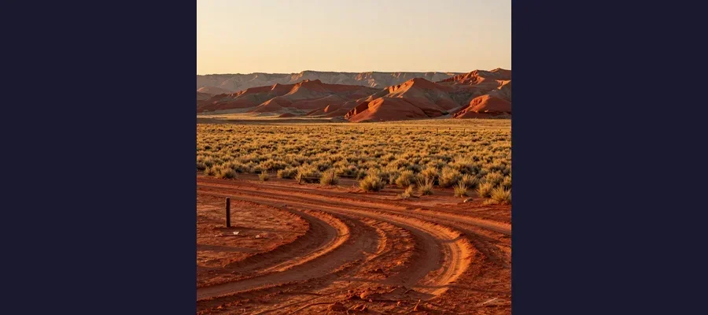
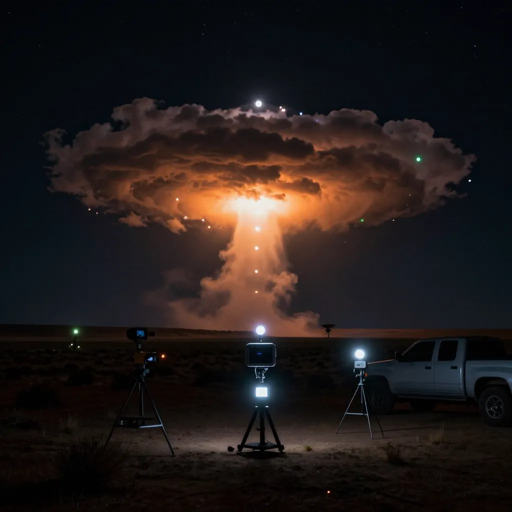

Skinwalker Ranch: The 480-Acre Property in Utah Where Paranormal Activity Became a Government Secret

Skinwalker Ranch — a 480-acre property in Utah’s Uintah Basin where cattle mutilations, UFO sightings, bulletproof wolf creatures, and poltergeist activity prompted a $22 million Pentagon investigation.
In 1994, a cattle rancher named Terry Sherman and his wife Gwen purchased a 480-acre property southeast of Ballard, Utah, in the remote Uintah Basin. The land was beautiful — rolling high desert terrain, sweeping views of the Uinta Mountains, and a sense of isolation that the Shermans found peaceful. They moved their family onto the ranch and settled into what they expected to be a quiet rural life. Within months, that peace was shattered. The Shermans began experiencing a cascade of phenomena that defied every rational explanation they could muster. Cattle were mutilated with surgical precision, their organs removed through incisions so clean that veterinarians could not identify the instrument used. Unidentified craft appeared in the sky above the property — glowing orbs, structured vehicles, and what witnesses described as orange portals that opened in midair. Strange, bipedal creatures were spotted at the edge of the tree line, watching the house. Equipment malfunctioned without explanation. The family dogs began behaving erratically, staring at empty corners and refusing to go outside after dark. And one night, Terry Sherman encountered something that would come to define the legend of the property: a wolf-like creature three times the size of a normal wolf, with glowing red eyes, that stood unfazed after Sherman shot it three times at close range. The animal simply turned and walked away into the darkness.
The Shermans lasted eighteen months. In 1996, they sold the ranch and fled, going public with their story in the Deseret News and, later, in a series of articles by investigative journalist George Knapp in the Las Vegas Mercury. Their account attracted the attention of a billionaire hotelier and aerospace entrepreneur named Robert Bigelow, who purchased the property and embarked on what would become one of the most extraordinary — and most controversial — paranormal investigations in American history. The property became known as Skinwalker Ranch, named after the terrifying shape-shifting witches of Navajo legend. And over the next three decades, it would draw private researchers, Defense Intelligence Agency contracts, a bestselling book, a hit television series, and a current owner who has spent millions of his own dollars trying to answer a single question: what is happening on this land?
The Skinwalker Legend: What the Navajo Have Known for Centuries
The ranch's name comes from the Navajo (Diné) concept of the skin-walker, or yee naaldlooshii — literally, "with it, he goes on all fours." In Navajo tradition, a skin-walker is a medicine man or witch who has corrupted their healing knowledge to gain the power of transformation. By committing unspeakable acts — including the murder of a close family member — a practitioner can achieve the ability to shift between human and animal forms, typically assuming the shape of a coyote, wolf, fox, owl, or crow. Skin-walkers are considered among the most dangerous and feared entities in Navajo cosmology. They are said to run with extraordinary speed, to read minds, to invade homes through tiny cracks, and to cause illness, madness, and death. They are so feared that many traditional Navajo people will not speak of them directly, believing that even mentioning them can attract their attention.
The Ute people, whose reservation borders the Uintah Basin, have their own traditions about the land where Skinwalker Ranch sits. Ute elders have long considered the area cursed or spiritually dangerous, and some tribal members have described a longstanding prohibition against visiting the property. The region has been a hotspot for unusual sightings since at least the 1970s, when UFO reports from the Uintah Basin were publicized in local and national media. Whether the Sherman family was aware of this history when they purchased the property in 1994 is unclear, but they became part of it almost immediately.
🕵️ The Wolf That Would Not Die
The most dramatic encounter reported by the Sherman family occurred one evening shortly after they moved to the ranch. Terry Sherman was walking his dogs near the property's perimeter when he encountered an enormous wolf-like creature — described as three times the size of a normal wolf, with thick dark fur and what appeared to be glowing red eyes. The animal approached the house, where it seized a calf by the nose through a fence. Sherman grabbed a rifle and shot the creature three times at close range. According to Sherman's account, the animal showed no reaction to the bullets — no flinching, no bleeding, no sound. It released the calf, turned, and walked calmly into the darkness. The Shermans tracked it for a short distance but found no blood trail, no fur, and no evidence that it had ever been hit. The incident was one of several that convinced the family they were dealing with something far outside the boundaries of normal wildlife.

The Uintah Basin of Utah — a vast, remote landscape of sagebrush plains and red sandstone mesas where the Ute people have lived for centuries. The land itself seems to hold secrets that predate written history.
Bigelow, NIDS, and the Years of Scientific Investigation
In 1996, the Sherman family sold the ranch to Robert Bigelow, a Las Vegas billionaire who had made his fortune in budget hotel chains and had developed a passionate, decades-long interest in anomalous phenomena. Bigelow had already founded the National Institute for Discovery Science (NIDS) in 1995, a privately funded research organization staffed by Ph.D.-level physicists, former law enforcement officers, veterinarians, and biochemists. The acquisition of Skinwalker Ranch gave NIDS a dedicated research site — a controlled environment where phenomena could be documented, instrumented, and analyzed with scientific rigor.
The NIDS investigation of Skinwalker Ranch ran for approximately eight years, from 1996 to the organization's closure in 2004. During that time, NIDS researchers documented a remarkable range of phenomena, including additional cattle mutilations with characteristics that resisted conventional explanation — precise incisions, removed soft tissue and organs, no blood at the scene, and carcasses found in positions that suggested they had been dropped from a height. NIDS researchers also reported unidentified aerial phenomena, including glowing orbs, structured craft, and what several witnesses described as "windows" or portals — orange, circular openings in the sky that appeared to contain structured environments behind them. Electromagnetic instruments recorded anomalous readings. GPS devices malfunctioned. Cameras and electronic equipment failed without explanation. In several instances, researchers reported that the phenomena appeared to respond to observation — as if whatever was producing the effects was aware it was being watched and was adjusting its behavior accordingly.
The primary written record of the NIDS investigation is "Hunt for the Skinwalker" (2005), co-authored by Dr. Colm A. Kelleher, a NIDS biochemist, and journalist George Knapp. The book details hundreds of reported incidents at the ranch, including the Sherman family's original experiences and the NIDS team's own encounters. Kelleher and Knapp documented cases of poltergeist-like activity inside the ranch house, the appearance of cryptid creatures, and the now-famous account of NIDS researchers observing a yellowish, translucent opening in the sky through which a large, dark, structured object appeared to emerge before the opening sealed shut. The book became a bestseller and brought the Skinwalker Ranch story to a national audience.
💰 The Pentagon's $22 Million Secret
In 2008, the Defense Intelligence Agency (DIA) awarded a classified $22 million contract to Bigelow Aerospace Advanced Space Studies (BAASS), a subsidiary of Bigelow's aerospace company, to run a program called the Advanced Aerospace Weapon System Applications Program (AAWSAP). AAWSAP's mandate was breathtaking in scope: it was authorized to investigate not just unidentified aerial phenomena, but phenomena in space, underwater, and on the ground — including the kinds of anomalous activity reported at Skinwalker Ranch. The program ran from 2008 to 2012 and produced dozens of classified reports, some of which were later declassified and released to the public. The program's existence was revealed in a 2017 news investigation that disclosed the Pentagon's involvement in UFO research, including the connection to Bigelow and Skinwalker Ranch. The revelation that the United States Department of Defense had spent taxpayer money investigating a supposedly haunted ranch in Utah — and had done so secretly for years — was one of the most extraordinary disclosures in the history of government UFO research. It elevated Skinwalker Ranch from a fringe curiosity to a matter of national security interest.
The Current Investigation: Brandon Fugal and the History Channel Era
In 2016, Robert Bigelow sold the ranch to Brandon Fugal, a prominent Utah real estate mogul and chairman of the commercial real estate firm Colliers International in Utah. Fugal acquired the property through his company Adamantium Real Estate LLC and has since invested millions of dollars in a sustained scientific investigation. Fugal assembled a research team that includes Dr. Travis Taylor, an aerospace engineer and optical physicist who has worked on Department of Defense programs, and Erik Bard, a physicist and data scientist. The team has deployed an array of scientific instruments — electromagnetic sensors, radiation detectors, thermal imaging cameras, LIDAR systems, and ground-penetrating radar — and has documented a range of anomalous readings, including unexplained radiation spikes, GPS malfunctions, and localized electromagnetic interference.
In 2020, the investigation became the subject of the History Channel series "The Secret of Skinwalker Ranch," which has aired for multiple seasons and brought the property's story to millions of viewers. The show documents the team's ongoing experiments — firing rockets into the sky above the ranch to probe anomalous electromagnetic readings, digging up areas where ground-penetrating radar has detected buried structures, and attempting to interact with whatever forces may be present on the property. Critics have noted the show's entertainment-driven format and the absence of peer-reviewed scientific publications from the investigation, but Fugal has insisted that the research is genuine and that the phenomena are real, regardless of whether they make for good television.
- 1934–1994 — Kenneth and Edith Myers own the property; no publicly reported anomalous activity during this period
- 1994 — Terry and Gwen Sherman purchase the ranch; the wave of phenomena begins within months
- 1995 — Robert Bigelow founds NIDS (National Institute for Discovery Science) to investigate anomalous phenomena
- 1996 — Shermans sell the ranch to Bigelow; NIDS investigation begins; first public reports appear in Deseret News
- 1996–2004 — NIDS conducts eight years of on-site research; documents cattle mutilations, UAP, cryptid sightings, equipment failures
- 2004 — NIDS closes; Bigelow retains ownership but on-site investigation scales down
- 2005 — Colm Kelleher and George Knapp publish Hunt for the Skinwalker
- 2008–2012 — DIA awards $22 million AAWSAP contract to Bigelow's BAASS; Skinwalker Ranch included in investigation scope
- 2016 — Brandon Fugal purchases the ranch through Adamantium Real Estate LLC; launches new scientific investigation
- 2017 — Pentagon UFO program publicly disclosed; AAWSAP/Skinwalker connection revealed
- 2020–present — History Channel's The Secret of Skinwalker Ranch airs; Dr. Travis Taylor and Erik Bard lead on-site research
🔭 Portals, Windows, and the Interdimensional Hypothesis
One of the most intriguing aspects of the Skinwalker Ranch phenomenon is the recurring reports of "windows" or "portals" — circular or oval openings in the sky or ground that appear to connect the ranch to somewhere else. NIDS researchers reported observing a yellowish, translucent opening in the sky through which a dark, structured object appeared to emerge. The Sherman family described seeing orange, circular openings that resembled doorways. Brandon Fugal's research team has detected anomalous electromagnetic readings concentrated in specific areas of the property that some have interpreted as potential evidence of a localized distortion in spacetime. The portal hypothesis — the idea that the ranch sits on or near some kind of interdimensional gateway — is the most speculative explanation for the phenomena, but it is also the one that most comprehensively accounts for the sheer diversity of what has been reported: UFOs, cryptid creatures, cattle mutilations, poltergeist activity, equipment failures, and electromagnetic anomalies could all be explained by the presence of a passage between our reality and something else. The hypothesis has no empirical support in mainstream physics, but it has been taken seriously enough by serious researchers — including some with Defense Department credentials — that it cannot be dismissed as pure fantasy.

Anomalous lights over Skinwalker Ranch — one of many unexplained aerial phenomena documented by NIDS researchers, Pentagon-funded investigators, and the current research team. Multiple witnesses have reported orange portals, structured craft, and glowing orbs.
The Mystery Machine: Science, Spectacle, and the Search for Proof
Skinwalker Ranch occupies a unique position in the landscape of paranormal research. It is simultaneously one of the most thoroughly investigated anomalous sites in the world and one of the most fiercely criticized. Skeptics point to the absence of peer-reviewed scientific publications, the reliance on anecdotal testimony, and the entertainment industry's involvement as evidence that the ranch is more spectacle than science. Defenders argue that the phenomena at Skinwalker Ranch are inherently difficult to study using conventional scientific methods — that they appear unpredictably, resist instrumentation, and may respond to the presence of observers in ways that make controlled experimentation impossible.
The connection between Skinwalker Ranch and the broader government UAP investigation has lent the property a degree of credibility that few other paranormal sites possess. The fact that the Defense Intelligence Agency was willing to spend $22 million investigating the ranch and related phenomena — and that the program was classified — suggests that someone in the national security apparatus took the reports seriously enough to commit real resources. The release of declassified AAWSAP documents has shown that the program investigated a wide range of anomalous phenomena, not just UFOs, and that Skinwalker Ranch was considered significant enough to be included in the research scope. Whether this constitutes evidence that the phenomena are real, or merely evidence that the government is willing to investigate unusual claims, remains a matter of interpretation.
- Cattle mutilations — Precise surgical incisions, removed organs, no blood at the scene; documented by NIDS researchers and veterinarians; conventional explanations (predators, disease) do not fully account for the forensic characteristics
- Unidentified aerial phenomena — Glowing orbs, structured craft, orange "portals" in the sky; observed by multiple trained witnesses including NIDS researchers and Sherman family members
- Cryptid creatures — Large wolf-like animals, bipedal figures at the tree line; the "impervious wolf" encounter is the most famous
- Equipment failures — Cameras, GPS devices, electromagnetic instruments, and electronic equipment malfunction without explanation; some failures correlate with reported phenomena
- Electromagnetic and radiation anomalies — Documented by Travis Taylor's team using scientific instruments; localized spikes that do not conform to expected background patterns
- Poltergeist activity — Objects moving, doors opening, unexplained sounds inside the ranch house; reported by the Shermans and subsequent occupants
👀 The Property That Sees Back
Skinwalker Ranch is, depending on your perspective, either the most important anomalous site on Earth or a masterclass in how money, media, and belief can transform a remote patch of Utah desert into a global phenomenon. The evidence is ambiguous — rich in testimony and instrumentation data but poor in the kind of reproducible, peer-reviewed results that science demands. The Pentagon's $22 million investment via AAWSAP and the involvement of credentialed researchers like Dr. Travis Taylor and Dr. Colm Kelleher give the ranch a legitimacy that sets it apart from most paranormal claims. The Navajo and Ute traditions that give the property its name remind us that Indigenous peoples reported strange phenomena in the Uintah Basin long before the Sherman family arrived. And the portal hypothesis — however speculative — offers a framework that could, in principle, account for the bewildering diversity of what has been reported. Like the enduring questions surrounding the Roswell UFO incident, the worldwide panic generated by the chupacabra, the collective false memories of the Mandela Effect, or the stubborn persistence of the Loch Ness Monster legend, Skinwalker Ranch sits at the intersection of evidence and belief — a place where the unknown is not just reported but instrumented, filmed, and funded. Whether the ranch is a gateway to another dimension, a magnet for psychological projection, or simply a very unusual piece of real estate, it has become something rare in the world of anomalous phenomena: a place where the mystery is organized, persistent, and still unfolding. The search for ancient relics like the Ark of the Covenant is a search for something lost. The investigation of Skinwalker Ranch is something stranger — a search for something that may still be there, watching.
Frequently Asked Questions
What is Skinwalker Ranch?
Skinwalker Ranch is a property of approximately 512 acres located in the Uintah Basin of northeastern Utah, near the town of Ballard. It is named after the skin-walker of Navajo legend — a shape-shifting witch believed capable of transforming between human and animal forms. The ranch has been the site of reported paranormal activity since the 1990s, including cattle mutilations, UFO sightings, cryptid creature encounters, electromagnetic anomalies, and poltergeist-like phenomena. It has been investigated by private researchers, a billionaire aerospace entrepreneur, and the United States Department of Defense.
Did the U.S. government really investigate Skinwalker Ranch?
Yes. From 2008 to 2012, the Defense Intelligence Agency (DIA) funded a $22 million classified program called AAWSAP (Advanced Aerospace Weapon System Applications Program), which was contracted to Bigelow Aerospace Advanced Space Studies (BAASS), a company owned by Robert Bigelow, who also owned Skinwalker Ranch at the time. The program investigated a broad range of anomalous phenomena, including those reported at the ranch. The program's existence was publicly disclosed in 2017 and has been confirmed by multiple government officials and declassified documents.
Who owns Skinwalker Ranch now?
The current owner is Brandon Fugal, a Utah-based real estate executive and chairman of Colliers International in Utah. Fugal purchased the property in 2016 through his company Adamantium Real Estate LLC and has funded an ongoing scientific investigation featured on the History Channel series The Secret of Skinwalker Ranch. Fugal has stated that he was initially skeptical of the ranch's reputation but became convinced that genuine anomalous phenomena were occurring after deploying scientific instruments and personally experiencing unexplained events.
Is there any scientific proof of paranormal activity at Skinwalker Ranch?
There is instrumented data suggesting unusual electromagnetic readings, radiation spikes, and equipment malfunctions at the ranch, documented by NIDS researchers and Brandon Fugal's current team. However, no findings from Skinwalker Ranch have been published in peer-reviewed scientific journals, and no evidence conclusively demonstrates the existence of paranormal or interdimensional phenomena. The ranch's proponents argue that the phenomena resist conventional scientific methodology; critics argue that the absence of reproducible results is itself a result. The debate remains unresolved.
📖 Recommended Reading
Want to learn more? Check out Amazon.com: Hunt for the Skinwalker: Science Confronts the Unexplained at a Remote Ranch in Utah: 9781416505211: Kelleher Ph.D., Colm A., Knapp, George: Books on Amazon for a deeper dive into this fascinating topic. (As an Amazon Associate, we earn from qualifying purchases.)
References & Further Reading
- Wikipedia: Skinwalker Ranch — Comprehensive history of the property, reported phenomena, and investigations
- History.com: How Skinwalker Ranch Became a Hotbed of Paranormal Activity — Detailed account of reported phenomena and investigations
- Wikipedia: Skin-walker — The Navajo legend of the yee naaldlooshii shape-shifting witch
- Stranger than Fiction: Bob Bigelow, AAWSAP, and the Pentagon — Detailed reconstruction of the government contract and investigation
- All That's Interesting: Skinwalkers — The Real Story Behind the Navajo Legend and the Utah Ranch
- Wikipedia: AATIP/AAWSAP — The Pentagon's classified UFO and anomalous phenomena investigation program
- Britannica: Skinwalker — Overview of the Navajo shape-shifting witch legend and its cultural context
Editorial note: reconstructions are continuously revised as imaging and inscription studies improve. See our Editorial Policy.